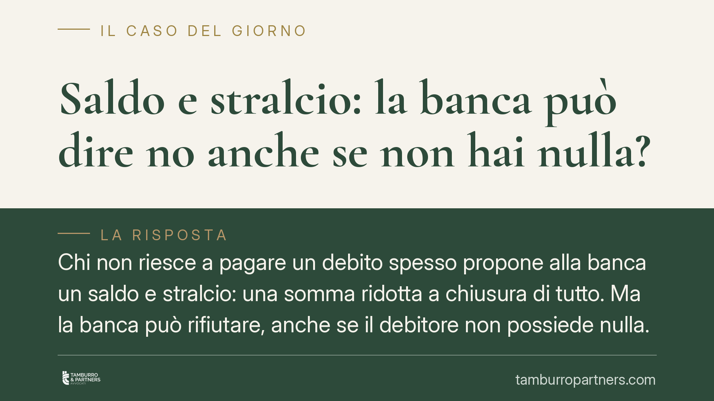

Saldo e stralcio: la banca può dire no anche se non hai nulla?
Chi non riesce a pagare un debito spesso propone alla banca un saldo e stralcio: una somma ridotta a chiusura di tutto. Ma la banca può rifiutare, anche se il debitore non possiede nulla. La ragione è giuridica prima ancora che economica. Vediamo perché e quali strade restano al debitore in difficoltà.

Cos'è davvero il saldo e stralcio
Il saldo e stralcio è, sul piano giuridico, una transazione ai sensi dell'art. 1965 cod. civ.: le parti si fanno reciproche concessioni per chiudere una controversia, presente o potenziale. Il debitore versa una somma inferiore al dovuto; il creditore rinuncia alla differenza e dichiara estinta l'intera posizione.
Proprio perché è un contratto, il saldo e stralcio richiede l'accordo di entrambe le parti. Nessuno può imporlo all'altro. E qui sta il punto: la banca non è obbligata ad accettare una proposta di questo tipo, per quanto ragionevole possa apparire al debitore.
Perché la banca può rifiutare l'adempimento parziale
Il fondamento del rifiuto è l'art. 1181 cod. civ., secondo cui il creditore può rifiutare un adempimento parziale, anche se la prestazione è divisibile, salvo che la legge o gli usi dispongano diversamente. Chi propone di pagare, ad esempio, il 40% del debito sta offrendo esattamente un adempimento parziale: la banca ha il diritto di respingerlo e di pretendere l'intero.
A monte opera la libertà negoziale: gli artt. 1321 e 1322 cod. civ. riconoscono alle parti la libertà di concludere il contratto e di determinarne il contenuto. La banca è dunque libera di decidere se avviare o meno una trattativa transattiva e a quali condizioni. Non esiste un "diritto allo sconto" del debitore, nemmeno quando è nullatenente.
La logica di convenienza della banca
In concreto, la banca ragiona in termini economici. Valuta se incassare subito una somma ridotta convenga più che avviare o proseguire un recupero forzoso dall'esito incerto. Se il debitore è privo di beni, di reddito aggredibile e di prospettive, un saldo e stralcio può risultare vantaggioso per l'istituto, che eviterebbe costi di esecuzione e tempi lunghi.
Ma il calcolo non è automatico. La banca può ritenere che il debitore abbia beni non dichiarati, che possa migliorare la propria situazione, oppure può avere già svalutato o ceduto il credito a una società specializzata con logiche diverse. Anche l'assenza totale di patrimonio, quindi, non garantisce l'accettazione: rende la proposta più credibile, non vincolante.
Quando il consenso del creditore non serve più
Esiste però un ambito in cui la logica dell'autonomia negoziale si rovescia. Nelle procedure di sovraindebitamento disciplinate dal Codice della crisi d'impresa e dell'insolvenza (d.lgs. n. 14/2019), il debitore può ottenere risultati che prescindono dal consenso di tutti i creditori.
Il piano di ristrutturazione dei debiti del consumatore può essere omologato dal giudice anche in assenza dell'adesione dei creditori. Ancora più rilevante è l'esdebitazione del debitore incapiente prevista dall'art. 283 CCII: chi non ha alcuna utilità da offrire può, ricorrendone i presupposti e una sola volta, essere liberato dai debiti senza pagare nulla e senza il via libera dei creditori. È lo strumento pensato proprio per chi "non ha nulla" e si vede rifiutare ogni proposta.
Implicazioni pratiche per il debitore
Per chi è in difficoltà, il messaggio è duplice. Da un lato, la trattativa privata di saldo e stralcio resta aperta ma non è un diritto: dipende dalla convenienza percepita dalla controparte. Dall'altro, se la via negoziale si chiude, il sistema offre procedure concorsuali che possono condurre alla liberazione dai debiti anche contro la volontà dei creditori.
La scelta tra trattativa e procedura va calibrata sulla situazione concreta: entità del debito, presenza di beni, natura del creditore, sostenibilità della somma offerta.
Cosa fare in concreto
- Ricostruisci l'esposizione reale: raccogli estratti conto, atti di precetto e comunicazioni per capire l'importo effettivo e a chi appartiene oggi il credito.
- Formula proposte per iscritto: presenta la proposta di saldo e stralcio in forma scritta, indicando importo, tempi e la richiesta di liberatoria a chiusura del rapporto.
- Pretendi la liberatoria scritta: non versare alcuna somma prima di aver ottenuto l'accordo firmato con l'espressa rinuncia al residuo. Diffida dagli accordi solo verbali.
- Non pagare in anticipo: rifiuta ogni richiesta di acconto "per avviare la pratica" senza un impegno formale della controparte.
- Valuta le procedure di sovraindebitamento: se la trattativa fallisce, verifica con un professionista l'accesso agli strumenti del Codice della crisi, inclusa l'esdebitazione dell'incapiente.
Consigliamo di far esaminare la propria posizione da un professionista prima di formulare proposte o versare somme, per scegliere lo strumento più adatto al caso concreto.
---
Contributo informativo a cura di Tamburro & Partners Avvocati. Non costituisce parere legale.
Ogni contratto ha il suo equilibrio.
Se vuoi una revisione delle clausole o una redazione su misura, scrivi allo studio. Ti rispondiamo entro un giorno lavorativo.